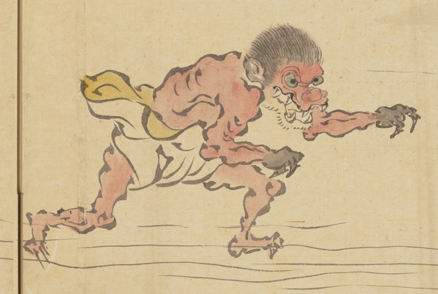

赤い肌の猿のような妖怪。頭部と手首より先だけ黒く、牙をむき右側に描かれた妖怪へ襲い掛かろうとしているように見える。
出典：親書誌：U426_nichibunken_0452：妖怪絵巻屏風／日付：2022／資源識別子：U426_nichibunken_0452_0001_00013
Copyright (c)2010- International Research Center for Japanese Studies, Kyoto, Japan. All rights reserved.